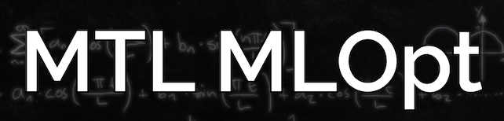

Γιάννης Μητλιάγκας
Γιάννης Μητλιάγκας
Associate professor, Computer Science, University of Montréal
Core faculty at Mila
Staff research scientist
Google DeepMind
Affiliated Researcher
Archimedes, Athens
Canada CIFAR AI Chair

Founder, organizer
Email, Scholar, Twitter, LinkedIn
I research topics in optimization, dynamics and learning, with a focus on modern machine learning. I have done work in the intersection of systems and theory. Some recent topics:
- Min-max optimization and the dynamics of games
- Generalization and domain adaptation
- Optimization for deep learning
- Statistical learning and inference
I work as an associate professor at the University of Montreal, and core faculty member at Mila. Grateful recipient of the Canada CIFAR AI Chair. My most important responsibility is the supervision of a dozen very talented junior researchers. Every fall, I teach ML to 100-200 grad students. Every winter, I teach an advanced research class on deep learning theory.
Prospective students: I will be looking for particularly strong students, for MSc or PhD for the fall of 2025. Unfortunatley, I might not be able to respond to all emails. Please make sure to go over my recent publications and list of recent projects (below). If you think that we have a strong overlap in interests please make sure to submit your supervision request by December 1st (form opens in mid-October) and mention me as one of your faculty of choice. I will consider all good candidates, but pay extra attention to those from unusual backgrounds, underrepresented groups, and candidates coming from regions under threat of war, occupation, political instability, etc (Ukraine, Palestine, Africa, … ).
For the winter semester of 2025, I am on sabbatical at Archimedes in Athens, Greece.
In Montreal, I work part-time as a research scientist at Google DeepMind.
I co-founded and hosted the first 2 seasons of MTL MLOpt, a bi-weekly meeting of optimization experts from Mila, UdeM, McGill (CS and math), Google DeepMind, SAIL, FAIR, MSR. We proudly share our guest speaker videos.
In in the early days of interest in the area, I co-organized the Smooth games optimization and ML workshop series at NeurIPS. The opening remarks video from NeurIPS 2019, gives a nice summary of our motivation for this line of work. For a summary of relevant work in my lab you can check out this slide deck. In spring 2022 I was invited to participate at the semester on Learning and Games at Simons Institute at Berkeley, CA.
For the last few summers I was honored to be invited to teach optimization for ML at the Neuromatch Academy's deep learning course.
Before joining the University of Montreal, I was a postdoc with the Departments of Computer Science and Statistics at Stanford University and a PhD candidate at The University of Texas at Austin.
 Ryan D'Orazio, PhD
Ryan D'Orazio, PhD
 Brady Neal, PhD
Brady Neal, PhD
 Zichu Liu, PhD
Zichu Liu, PhD
 Adam Ibrahim, PhD
Adam Ibrahim, PhD
{kind=link}